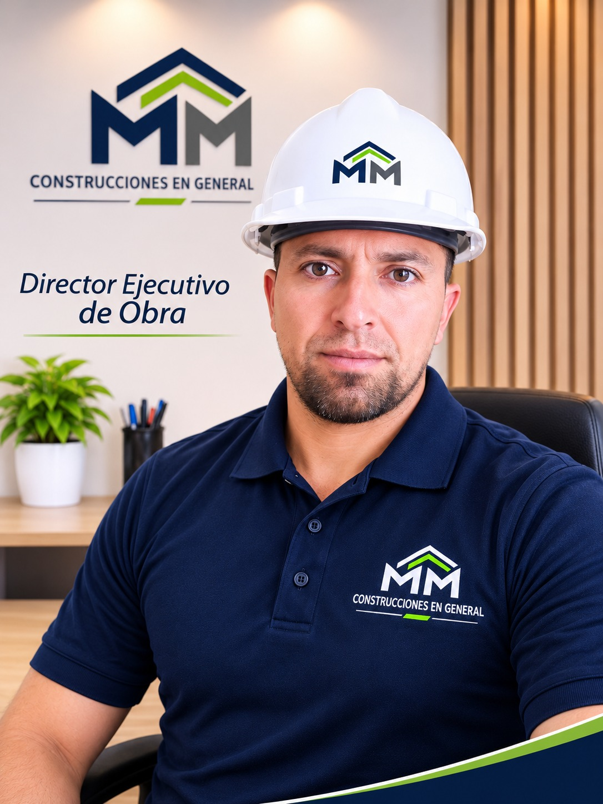

En M&M, cada obra requiere planificación, coordinación y seguimiento. Jhon cumple el rol de Director Ejecutivo de Obra, acompañando el desarrollo de los trabajos y manteniendo el foco en los compromisos definidos con cada cliente.
Su labor representa una forma de trabajar basada en la comunicación directa, la organización y la atención a los detalles de cada proyecto.
